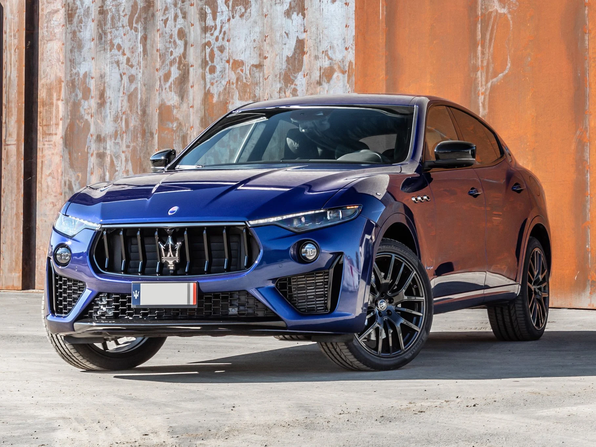
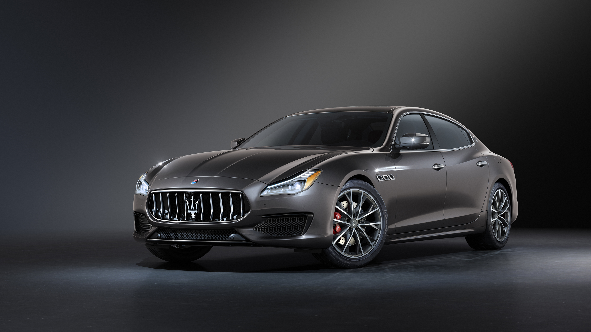
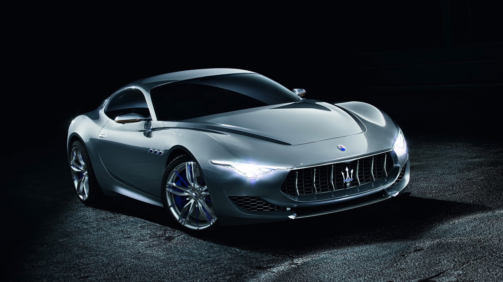

Les Voitures Maserati
Maserati incarne l'élégance, la puissance et l'innovation. Chaque modèle reflète un engagement envers l'excellence et un style sans compromis.
Modèles Emblématiques
Ghibli

Un modèle de luxe sportif avec une puissance incomparable.
- Moteur : V6 biturbo
- Puissance : 424 ch
- Accélération 0-100 km/h : 4,7 sec
Levante
Un SUV de luxe, alliant performance et élégance.
- Moteur : V6 biturbo
- Puissance : 430 ch
- Accélération 0-100 km/h : 5,2 sec
Quattroporte
Une berline sportive qui incarne l'innovation et le confort.
- Moteur : V8 biturbo
- Puissance : 580 ch
- Accélération 0-100 km/h : 4,2 sec
Alfieri
Un coupé dynamique et futuriste qui repousse les limites de l'innovation.
- Moteur : V6 hybride
- Puissance : 550 ch
- Accélération 0-100 km/h : 3,5 sec
GranTurismo
Un coupé grand tourisme qui allie élégance, puissance et confort.
- Moteur : V8 atmosphérique
- Puissance : 460 ch
- Accélération 0-100 km/h : 4,8 sec
MC20

Un supercar révolutionnaire avec une technologie hybride et une performance exceptionnelle.
- Moteur : V6 biturbo
- Puissance : 630 ch
- Accélération 0-100 km/h : 2,9 sec
Les Origines de Maserati
Fondée en 1914 à Modène, en Italie, Maserati a été créée par les frères Maserati, des ingénieurs passionnés d'automobile. Dès le début, la marque s'est distinguée par sa capacité à allier performance, luxe et innovation. Le premier modèle, la Maserati Tipo 26, a marqué le début d'une longue tradition de voitures de course et de luxe.

Les Années 1950 : L'Ascension de Maserati
Dans les années 1950, Maserati a consolidé sa réputation avec des modèles légendaires comme la Maserati 3500 GT, un modèle qui a marqué l'entrée de Maserati dans le marché des voitures de luxe de route. Ces voitures alliaient des performances exceptionnelles et un design raffiné, devenant des symboles du luxe italien.
Technologie et Innovation
Maserati est une marque pionnière en matière de technologie automobile. Les voitures Maserati sont connues pour leur moteur puissant, leur design élégant et leurs technologies avancées.
- Technologie moteur : Maserati utilise des moteurs V6 et V8 de haute performance, garantissant une conduite dynamique et réactive.
- Transmission et suspension : Les voitures Maserati sont dotées de transmissions avancées et de suspensions adaptatives pour une conduite fluide et précise.
- Technologie hybride : Maserati a lancé des modèles hybrides, comme le Maserati Levante Hybrid, intégrant des technologies modernes pour réduire les émissions tout en offrant des performances de premier ordre.
Les Modèles Récents
Aujourd'hui, Maserati continue d'innover avec des modèles comme la Maserati Levante, un SUV de luxe, et la Maserati MC20, une supercar qui repousse les limites de la performance automobile. Ces modèles combinent puissance, confort et technologies de pointe.
L'Héritage de Maserati
Maserati est plus qu'une simple marque de voitures. C'est un symbole de l'art automobile italien, alliant passion, luxe et performance. Depuis plus d'un siècle, Maserati incarne l'élégance et l'innovation, avec des voitures qui continuent de fasciner les passionnés d'automobile à travers le monde.